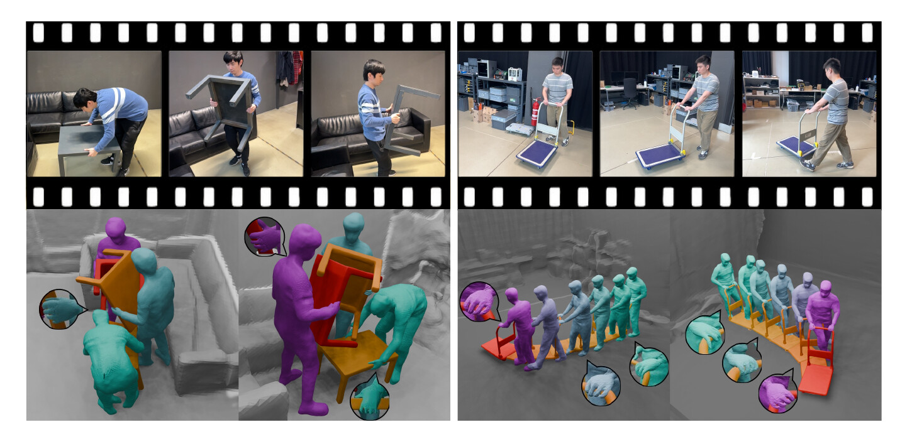
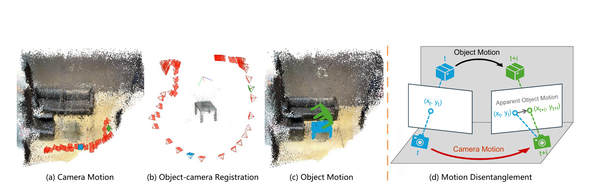
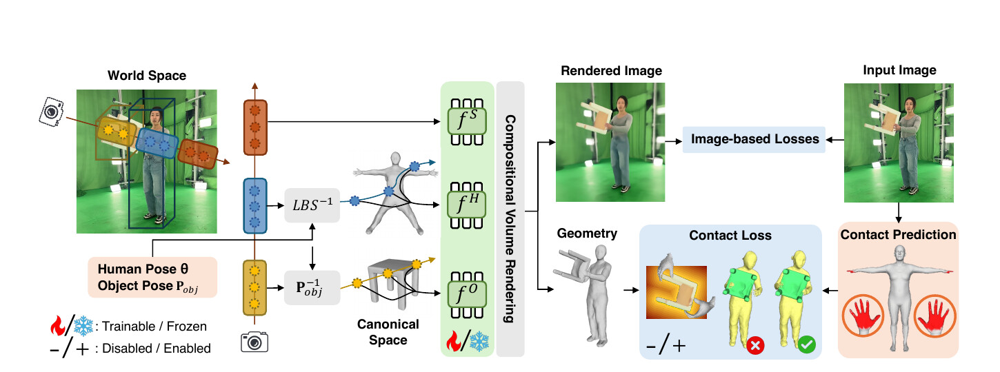

RHINO:
Reconstructing Human Interactions
with Novel Objects from Monocular Videos
CVPR 2026

Poster

Video
TL;DR
- First framework to recover a 4D human–object–scene reconstruction in a common world frame from monocular RGB video with a moving viewpoint.
- Compositional neural field with per-component signed-distance fields for human, object, and scene — jointly encoding shape and contact.
- Leverages 3D-aware foundation models (MASt3R) to decouple object motion from camera motion in low-texture scenes.
- New evaluation dataset of handheld monocular videos paired with a synchronized 4D-stage capture (seven sequences) providing ground-truth shape and camera motion.
Abstract
Reconstructing people, objects, and their interactions in 3D is a long-standing and fundamental goal for intelligent systems. Often the input is RGB video from a moving camera, making the task ill-posed; depth is ambiguous, humans and objects occlude each other, and camera and object motion entangle to create apparent motion. Most prior work addresses humans or objects in isolation, ignoring their interplay, or assumes known 3D shapes or cameras, which is impractical for real-world applications. We develop RHINO (Reconstructing Human Interactions with Novel Objects), a novel three-step framework that recovers in 3D a human, novel (unseen) manipulated object, and static scene in a common world frame from a monocular RGB video. First, we leverage 3D-aware foundation models to obtain cues that stabilize Structure-from-Motion (SfM) even for low-texture regions; this yields a coarse shape and apparent motion of a manipulated object from foreground pixels, and a coarse scene shape and camera motion from background pixels. Second, we estimate a human in the camera frame via an off-the-shelf method, and subtract the camera motion from apparent motion to extract the object motion; this registers the human, object, and coarse scene shapes into a common world frame. Third, we refine shapes using a compositional neural field with per-component signed-distance fields. The latter further enables differentiable contact priors that attract surfaces while penalizing interpenetration, improving the physical plausibility of the final reconstruction. For evaluation, we capture a new dataset of handheld monocular videos synchronized with a volumetric 4D capture stage, providing ground-truth shape and camera motion. RHINO outperforms state-of-the-art baselines on novel-view synthesis and 4D reconstruction. Ablations show that each stage contributes substantially.
Method
Initialization
We first estimate coarse shape and motion in the camera frame: a static scene reconstruction and per-frame camera trajectory from background pixels via SAM2 masks and MASt3R-stabilized Structure-from-Motion, a coarse object shape and apparent object motion from foreground pixels, and an off-the-shelf SMPL-X body in the camera frame. 3D-aware foundation models keep SfM stable even on low-texture surfaces where classical feature matching fails.

World-frame alignment
The previous step produces two camera trajectories from the same physical camera: a scene-derived trajectory in the world frame, and an object-derived trajectory computed as if the object were static. We align these two trajectories with a similarity transform, then subtract the camera motion from the apparent object motion to recover the true object motion. This registers the human, object, and scene into a single world frame.
Compositional refinement & contact
A compositional neural field with separate signed-distance fields for the human, the object, and the scene refines geometry and appearance against the input video via volumetric rendering. The SDFs additionally enable a differentiable contact prior that attracts surfaces predicted to be in contact while penalizing interpenetration, producing physically plausible reconstructions that respect how the human actually touches the object.
